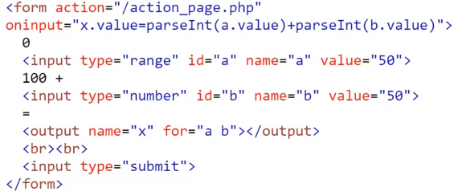
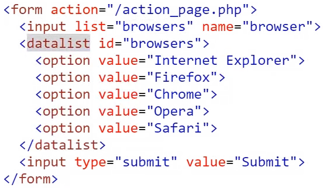
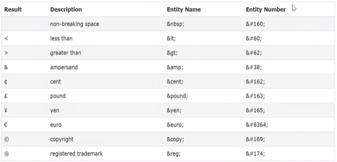
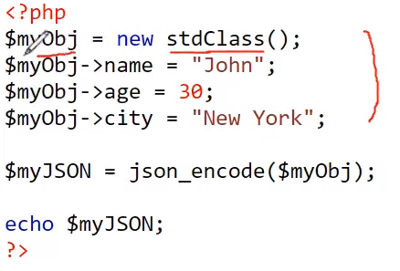
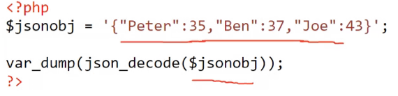

충남대학교 컴퓨터공학과 이규철 교수님의 "웹 프로그래밍" 강의를 필기한 내용입니다.
다소 잘못된 내용과 구어적 표현 이 포함되어 있을 수 있습니다.
<output> 태그 예시

- a와 b의 덧셈 결과를 바로 output태그에 보여주는 예시
<input> 태그 속성 정리
reset은 초기화시키되 html상에서 value로 초기값을 지정하였으면 그걸로 바뀐다date는 달력을 띄우며 min, max attribute로 날짜의 점위를 지정할 수 있다datetime-local은 날짜와 시간까지 보여주는 창을 띄운다hidden은 웹에서는 안보여도 소스 보기로 볼 수 있기 때문에 value같을 직접적으로 넣어주지 않는다?pattern을 이용해 정규식을 넣을 수 있다readonly와disabled둘 다 변경할 수 없는 값이지만,readonly는 정보가 서버로 넘어가는 반면disabled는 넘어가지 않음size는 입력창의 크기를 글자n개로 지정한 것이고maxlength는 입력할 수 있는 글자 갯수를 제한한다multiple은 파일 여러개를 입력받을 수 있는 attribute이다autofocus는 화면이 로드되었을 때 자동으로 해당 input에 focus를 하는 속성이다autocomplete “on”, “off”로 자동완성기능을 끄고 킬 수 있다formattribute로<form>태그 밖에서도 해당 form으로 제출되게 할 수 있다formactionattribute로 데이터를 전달하는 서버의 라우터를 변경할 수 있다formenctype은 데이터의 인코딩 방식을 변경할 수 있다formmethod로 특정 input태그에만 method를 변경할 수 있다formtarget은 a태그의 target처럼 결과를 같은 창에 띄울지 등을 설정할 수 있다formnovalidate로 validate를 하지 않을 수 있다- form태그에 novalidate라고 적어서 form전체를 validate하지 않을 수 있다
<datalist>, <option> 태그 예시

- 드랍다운 선택창을 만드는 예시
Semantic element
section은 주제별로 묶은거고article은 기사에 대한거다?<figure>은 이미지에 대한 래퍼 태그이고, 해당 이미지에 캡션을 다는<figurecaption>가 있다- 또한
<audio>로 음원을 래핑할 수 있고,<video>로 비디오를 래핑할 수 있다
Entities

- 참고해라
- 다른 특수문자는 검색해보거라
Encoding
- 한국어의 경우에는 UTF-8로 표현할 수 있기 때문에 다음과 같은 방식으로 인코딩 방식을 지정한다
<meta charset="UTF-8">- URL 인코딩의 경우에는 기본적으로 ASCII로 인코딩하고 ASCII에 없는 문자의 경우에는
%hex로 hex-encoding하여 사용한다
URL의 구조
{{ scheme }}://{{ prefix }}.{{ domain }}:{{ port ]}/{{ path }}/{{ filename }}
- Scheme은 http, https같은 internet service type이고
- Prefix는 www같은 도메인 접두어
- 뭐 나머지는 다 너가 아는 그거임
JSON
JSON.parse()는 문자열을 읽어 JS Object로 파싱하는 것이고JSON.stringify()는 JS Object를 JSON 문자열로 변환하는 것이다- 배열도 이 메소드를 써서 변환이 가능하다
JSON 문법규칙
- JSON에서는 큰따옴표만 사용해라
- function, date, undefined는 JSON으로 표현할 수 없다 - 얘네들은 문자열로 저장한다음에 형변환을 해줘야 한다.
- function의 경우에는
eval("(" + _func + ")")으로 형변환이 가능하고 - date는
new Date(_date)로 형변환 가능하다 - 문자열로 변환하는 것은
.toString()을 이용하면 된다
- function의 경우에는
PHP와 JSON
- 아래는 PHP 객체를 JSON String으로 변환하는 예시이다

- 아래는 JSON String을 PHP 객체로 변환하는 예시이다

json_decode()의 두번째 인자로 true를 주면 associative array로 변환이 된다